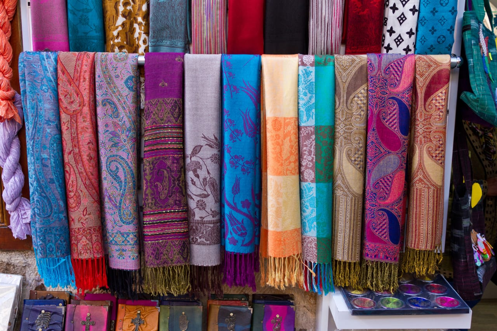

Pashmina Shawls

The region is famous for its exquisite Pashmina wool shawls, known for their softness and warmth.
The region is famous for its exquisite Pashmina wool shawls, known for their softness and warmth.
Traditional jewelry designs unique to the Dogra culture of Jammu are highly sought after.
Handcrafted items like woodwork, papier-mâché, and pottery are popular products from the region.